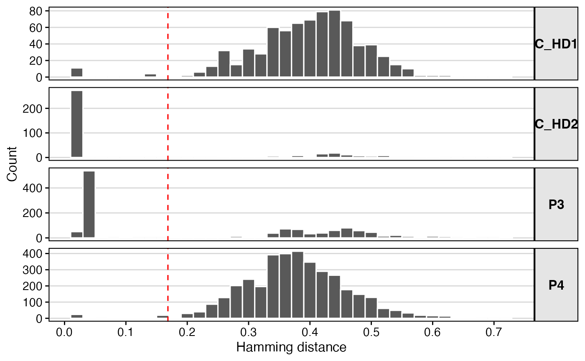
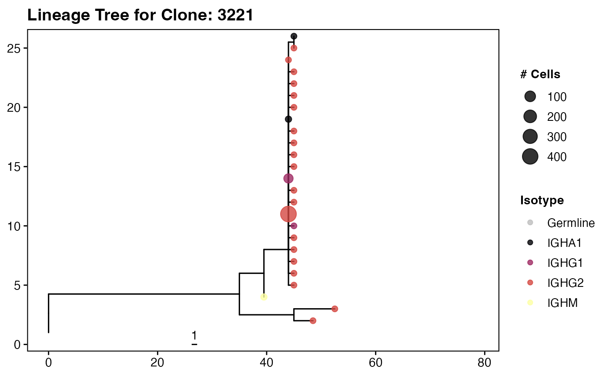
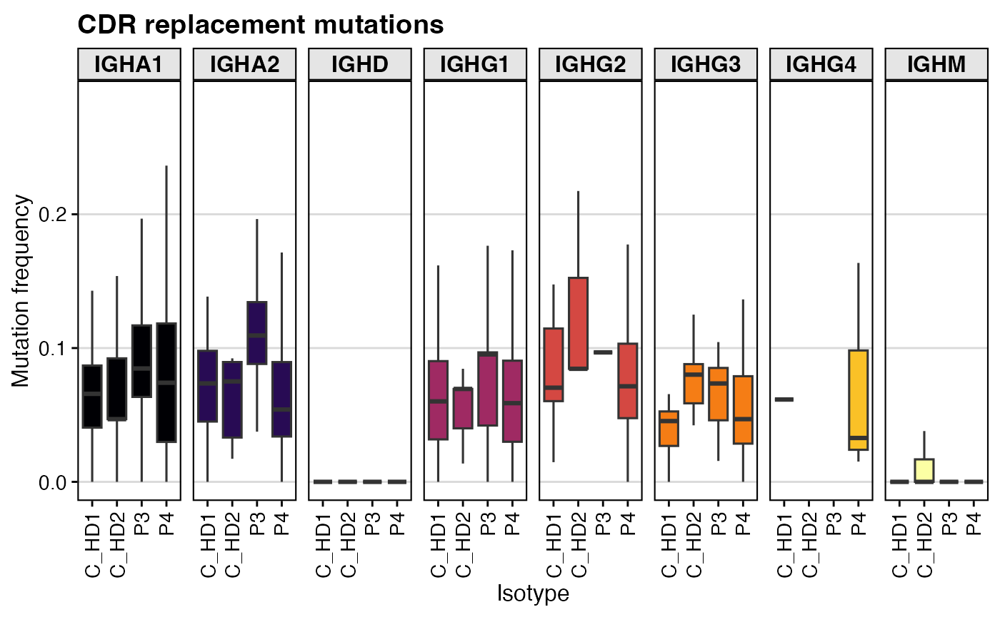

Combining Immcantation and scRepertoire
Compiled: October 31, 2025
Source:vignettes/articles/immcantation.Rmd
immcantation.RmdOverview
The Immcantation workflow is a suite of R
packages/python scripts designed for the analysis of B cell receptor
(BCR) sequencing data. This guide will walk you through the installation
and loading of the core packages required for analyzing single-cell BCR
data with accompanying interaction with scRepertoire. More
information on the Immcantation workflow is available at
their website.
Installation
Here is a brief overview of the role each package plays in the
Immcantation workflow:
-
alakazam: This package provides general tools for working with AIRR (Adaptive Immune Receptor Repertoire) data. It includes functions for data import/export, quality control, and basic frequency analysis of V(D)J genes and clonotypes. -
dowser: After identifying clones with scoper, dowser is used to perform phylogenetic analysis on the sequences within each clone. This helps in reconstructing the lineage trees that trace the affinity maturation process from the unmutated common ancestor. -
scoper: Used for inferring B cell clones from BCR sequencing data. It implements several methods for partitioning sequences into clonal groups based on shared VJ genes and junction region similarity. -
shazam: This package focuses on the analysis of somatic hypermutation (SHM) in immunoglobulin (Ig) sequences. Its functions allow you to quantify mutation frequencies, analyze mutational spectra, and measure the strength and nature of selection pressures.
packages <- c("alakazam", "shazam", "scoper", "dowser")
install.packages(packages)Citation
The Immcantation workflow has involved extensive
development across a range of methods and packages. If using the
vignette and packages, please read and cite the following:
alakazam
@article{gupta2015change,
title={Change-O: a toolkit for analyzing large-scale B cell immunoglobulin repertoire sequencing data},
author={Gupta, Namita T and Vander Heiden, Jason A and Uduman, Mohamed and Gadala-Maria, Daniel and Yaari, Gur and Kleinstein, Steven H},
journal={Bioinformatics},
volume={31},
number={20},
pages={3356--3358},
year={2015},
publisher={Oxford University Press}
}dowser
# Original Publication
@article{hoehn2022phylogenetic,
title={Phylogenetic analysis of migration, differentiation, and class switching in B cells},
author={Hoehn, Kenneth B and Pybus, Oliver G and Kleinstein, Steven H},
journal={PLoS computational biology},
volume={18},
number={4},
pages={e1009885},
year={2022},
publisher={Public Library of Science San Francisco, CA USA}
}
# Methodology for paired BCR sequences
@article{jensen2024inferring,
title={Inferring B cell phylogenies from paired H and L chain BCR sequences with Dowser},
author={Jensen, Cole G and Sumner, Jacob A and Kleinstein, Steven H and Hoehn, Kenneth B},
journal={The Journal of Immunology},
volume={212},
number={10},
pages={1579--1588},
year={2024},
publisher={American Association of Immunologists}
}scoper
@article{nouri2018spectral,
title={A spectral clustering-based method for identifying clones from high-throughput B cell repertoire sequencing data},
author={Nouri, Nima and Kleinstein, Steven H},
journal={Bioinformatics},
volume={34},
number={13},
pages={i341--i349},
year={2018},
publisher={Oxford University Press}
}shazam
# Selection analysis methods
@article{yaari2012quantifying,
title={Quantifying selection in high-throughput Immunoglobulin sequencing data sets},
author={Yaari, Gur and Uduman, Mohamed and Kleinstein, Steven H},
journal={Nucleic acids research},
volume={40},
number={17},
pages={e134--e134},
year={2012},
publisher={Oxford University Press}
}
# HH_S5F model and the targeting model generation methods
@article{yaari2013models,
title={Models of somatic hypermutation targeting and substitution based on synonymous mutations from high-throughput immunoglobulin sequencing data},
author={Yaari, Gur and Vander Heiden, Jason A and Uduman, Mohamed and Gadala-Maria, Daniel and Gupta, Namita and Stern, Joel NH and O’Connor, Kevin C and Hafler, David A and Laserson, Uri and Vigneault, Francois and others},
journal={Frontiers in immunology},
volume={4},
pages={358},
year={2013},
publisher={Frontiers Media SA}
}Loading BCR Data
Data from this vignette is derived from PMID: 33891889, which examines the immune dysregulation of multisystem inflammatory syndrome in children following COVID-19 infection. Raw data from SRA was downloaded and re-aligned using the standard Cell Ranger v9.0 workflow.
After processing the raw FASTA files with IgBLAST using the provided
bash script Immcantation_Bash.sh,
you will have a set of tab-separated value (.tsv) files.
The bash script automates the use of Change-O’s
AssignGenes.py and MakeDb.py tools, which
perform V(D)J gene assignment and construct a database file for each
sample. The output file we are interested in is
all_contig_igblast_db-pass.tsv.
Our first task in R is to locate all of these database files, load them, and combine them into a single, clean data frame. The following code block handles this process, performing several essential quality control steps along the way to ensure the data is suitable for downstream analysis.
# -------- Building BCR Data Base -------------------
# Recursively find files that match the igBlast output
file.list <- list.files(
path = "./Alignments",
pattern = "all_contig_igblast_db-pass.tsv",
recursive = TRUE
)
# Generating Categorical Variables to use Downstream
sample_id <- stringr::str_split(file.list, "/", simplify = TRUE)[, 1]
subject_id <- stringr::str_remove(sample_id, "PBMC_")
subject_id <- stringr::str_remove(subject_id, "_1")
subject_id <- stringr::str_remove(subject_id, "_2")
# Iterative Processing and Filtering of Each Sample ---
lib_data <- lapply(seq_along(file.list), function(x) {
tmp <- read.delim(paste0("./Alignments/", file.list[x]))
tmp$sample_id <- sample_id[x]
tmp$subject_id <- subject_id[x]
tmp$cell_id <- stringr::str_split(tmp$sequence_id, "_", simplify = TRUE)[, 1]
tmp$cell_id_unique <- paste0(sample_id[x], "_", tmp$cell_id)
# Data Cleaning and Filtering Steps
if (any(tmp$productive == "TRUE")) {
tmp <- tmp %>% filter(productive == TRUE)
} else if (any(tmp$productive == "T")) {
tmp <- tmp %>% filter(productive == "T")
}
# Remove cells that have more than one heavy chain contig assigned.
multi_heavy <- tmp %>%
filter(locus == "IGH") %>% # Isolate heavy chain records
count(cell_id) # Count heavy chains per cell
multi_heavy_cells <- multi_heavy %>%
filter(n > 1) %>%
pull(cell_id) # Extract the cell IDs as a vector
# Filter out all records (both heavy and light) from these problematic cells.
tmp <- tmp %>% filter(!cell_id %in% multi_heavy_cells)
# Standardize isotype calls ('c_call').
tmp$c_call <- stringr::str_split(tmp$c_call, ",", simplify = TRUE)[, 1]
# Remove any records where an isotype could not be determined.
tmp <- tmp %>% filter(c_call != "")
# Ensure all remaining cells have a paired heavy chain.
heavy_cells <- tmp %>% filter(locus == "IGH") %>% pull(cell_id)
light_cells <- tmp %>% filter(locus == "IGK" | locus == "IGL") %>% pull(cell_id)
no_heavy_cells <- setdiff(light_cells, heavy_cells)
# Remove the orphan light chain records.
tmp <- tmp %>% filter(!cell_id %in% no_heavy_cells)
return(tmp)
})
# Combining all the data together
bcr_db <- do.call(rbind, lib_data)
saveRDS(bcr_db, "Immcantation_bcr_db.rds")Determining a Clonal Assignment Threshold
The core task in B cell repertoire analysis is to group sequences
into “clones”—sets of cells that originated from the same initial B cell
and underwent affinity maturation. The Immcantation
workflow defines clones as sequences that use the same V and J genes and
have a high degree of similarity in their junction regions.
But how do we define “high similarity”? We need to determine a specific, objective distance threshold. Sequences with a junction similarity distance below this threshold will be considered part of the same clone. This step uses an automated, data-driven approach to find that threshold.
Calculate Nearest Neighbor Distances
(distToNearest)
The first step is to calculate the Hamming distance (the number of positions at which the characters are different) between the junction sequence of each B cell and its “nearest neighbor.” The nearest neighbor is the sequence from a different cell that has the most similar junction.
# Loading Data from Above Step
bcr_db <- readRDS(url("https://www.borch.dev/uploads/data/Immcantation_bcr_db.rds"))
# Split by Subject Id
dist_heavy <- distToNearest(bcr_db,
cellIdColumn = "cell_id_unique",
first = FALSE,
onlyHeavy = TRUE,
fields = "subject_id",
nproc = 2,
progress = TRUE)Find the Threshold Automatically (findThreshold)
The distribution of nearest-neighbor distances is typically bimodal.
There is a sharp peak of very small distances (sequences within the same
clone) and a broader peak of larger distances (sequences from different
clones). The findThreshold function from the
scoper package automatically finds the valley between these
two peaks.
# Find threshold for cloning automatically
threshold_output <- findThreshold(dist_heavy$dist_nearest,
progress = TRUE,
method = "gmm",
model = "gamma-norm",
cutoff = "user",
spc = 0.995)## STEP> Parameter initialization
## VALUES> 6104
## ITERATIONS> 4## STEP> Fitting gamma-norm
threshold_auto <- threshold_output@thresholdThis function fits a Gaussian Mixture Model
(method = "gmm") to the distance distribution. It assumes
the distribution is a mix of a gamma distribution (for the
clonally-related distances) and a normal distribution (for the unrelated
distances).
ggplot(subset(dist_heavy, !is.na(dist_nearest)),
aes(x = dist_nearest)) +
theme_vignette() +
xlab("Hamming distance") +
ylab("Count") +
scale_x_continuous(breaks = seq(0, 1, 0.1)) +
geom_histogram(color = "white", binwidth = 0.02) +
geom_vline(xintercept = threshold_auto, lty=2, color='red') +
facet_grid(subject_id ~ ., scales="free_y") +
theme(strip.text.y.right = element_text(angle = 0))
Defining and Quantifying Clonal Groups
With the distance threshold established, we can now formally
partition our sequences into clonal lineages. This step uses the
scoper package to apply the threshold and assign a unique
clone ID to each sequence. We will then visualize the resulting clone
size distributions, which is a fundamental way to characterize an immune
repertoire.
Assigning Sequences to Clones (hierarchicalClones)
# call clones based on heavy chain
# keep light chain information for subclone calling later
results <- hierarchicalClones(dist_heavy,
cell_id = 'cell_id_unique',
threshold = threshold_auto,
only_heavy = FALSE,
split_light = FALSE,
summarize_clones = TRUE,
nproc = 2,
verbose = TRUE)## MAX_N_FILTER> 0 invalid junction(s) ( # of N > 0 ) in the junction column removed.
results_db <- as.data.frame(results)
results_db$sequence_id <- paste0(results_db$sample_id, "_", results_db$sequence_id)Counting Clone Sizes (countClones)
Now that clones are defined, a common first analysis is to quantify their sizes. How many cells belong to each clone?
# get clone sizes per subject
clone_sizes <- countClones(results_db,
groups=c("locus", "subject_id"))
clone_sizes %>%
filter(locus=="IGH") %>%
ggplot(aes(x=seq_count)) +
geom_bar(fill = "black", color = "black") +
geom_text(aes(label=seq_count, y=1), vjust=1.5, size=1) +
facet_wrap(~subject_id) +
scale_y_log10() +
scale_x_sqrt() +
theme_vignette() +
labs(x="Cells per clone",
y="# Clonal lineages")Germline Reconstruction and Subclone Definition
Now that we have defined our clonal groups based on heavy chain similarity, the next steps are to prepare for mutation analysis and to refine our clone definitions using the paired light chain information available in single-cell data.
This involves two main goals:
- Reconstruct the unmutated germline sequence for each observed BCR. This is the baseline against which we will measure somatic hypermutation.
- Define subclones by identifying groups of cells within a heavy-chain clone that share the same light chain.
Reconstructing Germline Sequences
(createGermlines)
# Read in IMGT-gapped sequences
references = readIMGT(dir = "~/share/germlines/imgt/human/vdj")## [1] "Read in 1213 from 17 fasta files"
results_db <- createGermlines(results_db,
reference = references)
# Data cleaning: Some downstream functions do not tolerate NA values in columns
results_db$c_call[is.na(results_db$c_call)] <- "NA"Defining Subclones by Light Chain
(resolveLightChains)
A key advantage of single-cell data is having paired heavy and light
chain information. While we defined our clones using only the heavy
chain, cells within that clone may use different light chains. These
represent distinct “subclones.” The resolveLightChains
function from scoper identifies these groupings.
# Split clones into subclones by light chain
subclones_db <- resolveLightChains(data=results_db,
cell = "cell_id_unique",
id = "sequence_id",
nproc = 2)
# General Clean Up
subclones_db$v_gene <- str_split(subclones_db$v_call, "[*]", simplify = TRUE)[,1]
subclones_db$j_gene <- str_split(subclones_db$j_call, "[*]", simplify = TRUE)[,1]
subclones_db$c_gene <- str_split(subclones_db$c_call, "[*]", simplify = TRUE)[,1]
subclones_db <- subclones_db %>%
mutate(chain = ifelse(locus == "IGH", "heavy", "light"))
subclones_db %>%
group_by(subject_id, chain, c_gene) %>%
tally() %>%
ggplot(aes(x=subject_id, y=n)) +
geom_bar(aes(fill=factor(c_gene)),
stat="identity", position="stack", color = "black", lwd = 0.25) +
facet_wrap(~chain) +
scale_fill_viridis(option = "B", discrete = TRUE, name="Isotype") +
labs(x="Subject", y="# BCRs") +
theme_vignette()Preparing Data for Lineage Tree Analysis
The ultimate goal of many BCR repertoire analyses is to reconstruct the evolutionary history of each B cell clone. This is done by building phylogenetic trees that trace the path of somatic hypermutation from the unmutated germline ancestor to the observed, mature B cells.
The dowser package is used for this phylogenetic
analysis, but it requires the data to be in a specific format: a
ScoperClones object. This step uses the
formatClones function to perform some final data cleaning
and to create this specialized object.
# Remove any rows where junction_length is NA, as this is a critical field.
subclones_db <- filter(subclones_db, !is.na(junction_length))
# Replace NA values in key annotation columns with the string "NA".
subclones_db$c_gene[is.na(subclones_db$c_gene)] <- "NA"
subclones_db$v_gene[is.na(subclones_db$v_gene)] <- "NA"
subclones_db$j_gene[is.na(subclones_db$j_gene)] <- "NA"
subclones_db$vj_gene[is.na(subclones_db$vj_gene)] <- "NA"
vec <- str_split(subclones_db$cell_id_unique, "_", simplify = TRUE)[,3]
subclones_db$timepoint <- ifelse(vec %in% c("1", "2"), vec, "1")
clones_hl <- formatClones(subclones_db,
cell = 'cell_id_unique',
chain = "HL",
split_light = FALSE,
traits = c("subject_id", "c_gene"),
columns = c("c_gene", "v_gene", "j_gene", "vj_gene", "subject_id", "timepoint"),
minseq = 2,
verbose = FALSE)Building and Visualizing Clonal Trees
The culmination of the Immcantation workflow is the
reconstruction and visualization of clonal lineage trees. These trees
map the evolutionary relationships between sequences in a clone,
starting from the unmutated germline ancestor and tracing the branches
of somatic hypermutation and class-switching that occur during affinity
maturation.
First, we use getTrees() function to build a maximum
parsimony tree for each clone, and then we scale the branches to
represent the number of mutations. We will then use
collapseNodes() to cleanup the trees and
scaleBranches() to enhanced the visual comparison of the
tree nodes.
clones_hl$num_cells <- sapply(clones_hl$data, function(x) sum(x@data$collapse_count))
# --- Build trees for each clone ---
trees = getTrees(clones_hl)
trees <- collapseNodes(trees)
trees_m = scaleBranches(trees, edge_type="mutations")Visualizing Clonal Trees
# --- Generate and Customize Tree Plots ---
# Define a color palette for isotypes for consistent plotting
isotypes <- c("IGHA1", "IGHA2", "IGHD", "IGHG1", "IGHG2", "IGHG3", "IGHG4", "IGHM", "Germline")
col_pal <- c(viridis_pal(option = "B")(8), "grey")
names(col_pal) <- isotypes
# plotTrees generates a list of ggplot objects, one for each tree.
plots_m <- plotTrees(trees_m, scale=1)
names(plots_m) <- trees_m$clone_id
# --- Example: Plotting a Single Interesting Tree ---
idx <- trees_m %>% slice_max(order_by = seqs, n = 1) %>% pull(clone_id)
example_tree_plot <- plots_m[[idx]]
max_x <- max(example_tree_plot$data$x) # Find x-axis limit
example_tree_plot +
labs(title = paste("Lineage Tree for Clone:", idx)) +
geom_tippoint(aes(color = c_gene,
size = collapse_count),
alpha = 0.8) +
scale_color_manual(values = col_pal, name = "Isotype") +
scale_size(name = "# Cells", range = c(2, 6)) +
xlim(0, max_x + (max_x * 0.5)) +
theme_vignette(grid_lines = "no")
Quantifying and Analyzing Somatic Hypermutation
A hallmark of the adaptive immune response is somatic hypermutation (SHM), the process by which B cells introduce mutations into their antibody genes to improve antigen binding. Quantifying the frequency, location, and type of these mutations is a primary goal of BCR repertoire analysis. This step uses the shazam package to calculate SHM and explore its patterns.
Calculate Somatic Hypermutation
(observedMutations)
The observedMutations() function is the workhorse for
all SHM analysis. It compares each observed sequence to its
reconstructed germline sequence (which we created in Step 4) and tallies
the mutations. The function is called multiple times to calculate
different metrics. It compares the sequence_alignment
(observed sequence) to the germline_alignment_d_mask
(unmutated ancestor).
Key Parameter(s) for observedMutations()
-
regionDefinition = IMGT_VDJ: This tells the function to use the standard IMGT definitions to identify Framework Regions (FWRs) and Complementarity-Determining Regions (CDRs). CDRs are the hypervariable loops that directly contact the antigen, while FWRs provide the structural scaffold. -
frequency = TRUE: Calculates the mutation rate (mutations per 100 base pairs). If FALSE, it calculates the raw count of mutations. -
combine = TRUE: This calculates a single mutation value across the entire VDJ segment. If FALSE, it calculates mutations separately for each sub-region (e.g.,mu_freq_cdr_sfor silent mutations in the CDR,mu_freq_fwr_rfor replacement mutations in the FWR, etc.).
After running these commands, your shm_db data frame will be
populated with many new columns (e.g., mu_freq,
mu_count, mu_freq_cdr_s,
mu_freq_cdr_r, etc) that quantify SHM in great detail.
# Detailed Mutation Counts by Region
shm_db <- observedMutations(subclones_db,
sequenceColumn = "sequence_alignment",
germlineColumn = "germline_alignment_d_mask",
regionDefinition = IMGT_VDJ,
frequency = FALSE,
combine = FALSE,
nproc = 2)
# Total Mutation Count (Combined VDJ regions)
shm_db <- observedMutations(shm_db,
sequenceColumn = "sequence_alignment",
germlineColumn = "germline_alignment_d_mask",
regionDefinition = IMGT_VDJ,
frequency = FALSE,
combine = TRUE,
nproc = 2)
# Detailed Mutation Frequency by Region
shm_db <- observedMutations(shm_db,
sequenceColumn = "sequence_alignment",
germlineColumn = "germline_alignment_d_mask",
regionDefinition = IMGT_VDJ,
frequency = TRUE,
combine = FALSE,
nproc = 2)
# Total Mutation Frequency (Combined VDJ regions
shm_db <- observedMutations(shm_db,
sequenceColumn = "sequence_alignment",
germlineColumn = "germline_alignment_d_mask",
regionDefinition = IMGT_VDJ,
frequency = TRUE,
combine = TRUE,
nproc = 2)Visualizing Replacement and Silent Mutations in CDRs
A key way to infer positive or negative selection is to compare the rate of replacement (R) mutations (which change the amino acid sequence) to silent (S) mutations (which do not). High levels of R mutations in the antigen-binding CDRs are a classic sign of positive selection for improved binding.
# Clean up isotype calls for plotting
shm_db$c_call <- str_split(shm_db$c_call, "[*]", simplify = TRUE)[,1]
# Plot silent mutation frequency in the CDRs
shm_db %>%
filter(locus == "IGH" & c_call != "NA") %>%
ggplot(aes(x = subject_id, y=mu_freq_cdr_s, fill=c_call)) +
geom_boxplot(outlier.alpha = 0) +
labs(title = "CDR silent mutations",
x = "Isotype", y = "Mutation frequency") +
scale_fill_viridis(option = "B", discrete = TRUE) +
facet_grid(.~c_call, scales="free_y") +
theme_vignette() +
theme(axis.text.x = element_text(angle = 90, vjust = 0.5, hjust=1)) +
guides(fill = "none")
# Plot replacement mutation frequency in the CDRs
shm_db %>%
filter(locus == "IGH" & c_call != "NA") %>%
ggplot(aes(x = subject_id, y=mu_freq_cdr_r, fill=c_call)) +
geom_boxplot(outlier.alpha = 0) +
labs(title = "CDR replacement mutations",
x = "Isotype", y = "Mutation frequency") +
scale_fill_viridis(option = "B", discrete = TRUE) +
facet_grid(.~c_call, scales="free_y") +
theme_vignette() +
theme(axis.text.x = element_text(angle = 90, vjust = 0.5, hjust=1)) +
guides(fill = "none")
This boxplot displays the frequency of replacement mutations
specifically within the CDRs of heavy chains. It is faceted by isotype
(c_call), allowing you to compare SHM levels in naive
(IgM/IgD) versus mature (IgG/IgA) B cells. You would typically expect to
see higher R mutation frequencies in class-switched isotypes, indicating
that these clones have undergone selection.
Visualizing Overall SHM Distribution
Finally, we can look at the overall distribution of SHM across all clones to get a global picture of the repertoire’s maturity.
# First, calculate the mean mutation frequency for each clone
mut_freq_clone <- shm_db %>%
filter(locus == "IGH") %>%
group_by(clone_id, subject_id, c_call) %>%
summarise(mean_mut_freq = mean(mu_freq))
# Order isotypes for consistent plotting
isotypes = c("IGHA1", "IGHA2", "IGHD", "IGHE", "IGHG1", "IGHG2", "IGHG3", "IGHG4", "IGHM")
mut_freq_clone$c_call <- factor(mut_freq_clone$c_call, levels=isotypes)
# Create a density plot of mutation frequencies
ggplot(mut_freq_clone %>% filter(c_call != "NA"),
aes(mean_mut_freq, fill = c_call)) +
geom_density(alpha=0.5) +
facet_grid(c_call~subject_id, scales="free") +
scale_fill_viridis(option = "B", discrete = TRUE) +
labs(x="Mean mutation frequency per clone", y="Density",
title="Somatic Hypermutation Rate by Isotype and Subject",
fill = "Isotype") +
theme_vignette(base_size = 8) +
guides(fill = "none")This series of density plots shows the distribution of SHM frequencies for each isotype within each subject. The x-axis represents the mutation frequency. A peak near zero indicates a large population of naive or unmutated cells (such as expected for IGHM and IGHD). In a mature immune response, you would expect to see the peaks for IgG and IgA shifted to the right, indicating higher overall mutation levels.
Interaction with Single-Cell Object
In this final step, we will add the clonal and SHM information we
derived from the Immcantation workflow into a Seurat object
and then use the powerful tools in the scRepertoire package
to perform integrated analyses.
More information on the upstream processing to create the Seurat Object can be obtained from this R script.
Merging Immcantation Data into the Seurat Object
Our first task is to add the Immcantation-derived metadata to the
Seurat object. The key is the unique cell identifier
(cell_id_unique) we created earlier, which matches the cell
barcodes in the Seurat object.
# Loading the Seurat Object
SeuratObject <- readRDS(url("https://www.borch.dev/uploads/data/Immcantation_SeuratObject.rds"))
# Preparing Our Immcantation Clonal Info
Immc.df <- shm_db %>%
filter(chain == "heavy") %>%
select(cell_id_unique,
clone_id,
subject_id,
new_mu_count = mu_count,
new_mu_freq = mu_freq,
mu_count_cdr_r,
mu_count_cdr_s,
mu_count_fwr_r,
mu_count_fwr_s,
mu_freq_cdr_r,
mu_freq_cdr_s,
mu_freq_fwr_r,
mu_freq_fwr_s) %>%
mutate(clone_id = paste0(subject_id, "_", clone_id)) %>%
column_to_rownames("cell_id_unique") %>%
as.data.frame()
# Add Metadata to Seurat Object
SeuratObject <- AddMetaData(SeuratObject, Immc.df)Visualizing Clonal Distribution on the UMAP
We can now immediately visualize where our B cell clones and the mutational frequency along the UMAP projection, which is organized by transcriptional similarity.
plot1 <- DimPlot(SeuratObject,
label = TRUE) +
guides(color = "none") +
theme_vignette(grid_lines = "no")
plot2 <- DimPlot(SeuratObject,
group.by = "clone_id") +
scale_color_viridis(option = "B", discrete = TRUE) +
guides(color = "none") +
theme_vignette(grid_lines = "no") +
theme(plot.title = element_blank())
plot3 <- FeaturePlot(SeuratObject,
features = "new_mu_freq")+
scale_color_viridis(option = "B") +
guides(color = "none") +
theme_vignette(grid_lines = "no") +
theme(plot.title = element_blank())
plot1 + plot2 + plot3Quantitative Analysis with scRepertoire
scRepertoire provides a suite of functions designed for
quantitative analysis of single-cell immune repertoires and functions
with custom clonal definitions, such as clone_id.
clonalQuant(SeuratObject,
group.by = "orig.ident",
cloneCall="clone_id")
clonalDiversity(SeuratObject,
group.by = "orig.ident",
cloneCall="clone_id",
metric = "shannon")
percentAA(SeuratObject,
group.by = "subject_id",
chain = "IGH",
aa.length = 20,
base_size = 8)By integrating the detailed clonal definitions from Immcantation with the powerful single-cell analysis tools in Seurat and scRepertoire, you can now perform a truly comprehensive analysis, linking the evolution of the antibody sequence directly to the dynamic transcriptional state of the B cell.